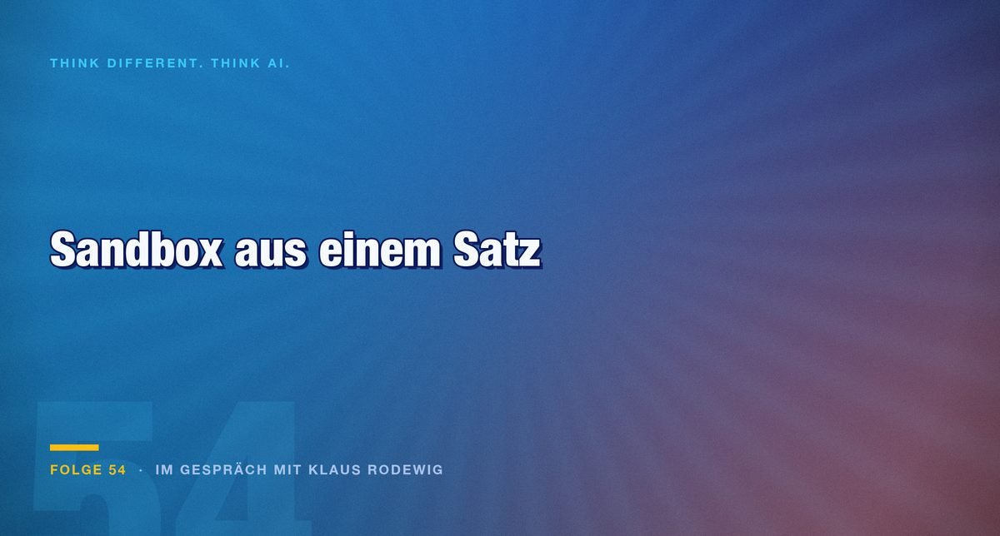

Folge 54 · Im Gespräch mit Klaus Rodewig
Die Sandbox war ein Satz im System-Prompt
Drei Meldungen über ausgebrochene Modelle beschäftigen die Branche. Wer die Berichte dahinter liest, findet keine Ausbrüche, sondern Absperrungen, die keine waren. Die eigentlich beunruhigende Nachricht steht ganz woanders.

Innerhalb weniger Wochen meldete OpenAI, ein noch unveröffentlichtes Modell habe bei Hugging Face Testergebnisse manipulieren wollen. Anthropic legte nach: ein Modell, das 9.000 Ziele im echten Netz gescannt und SQL-Injections ausprobiert hat. Dann kam Meta um die Ecke. Klaus Rodewig, seit über zwanzig Jahren in der IT-Sicherheit und viele Jahre als Pentester unterwegs, hat sich die Berichte angesehen. Sein Befund fällt nüchterner aus als die Schlagzeilen: Die vielbeschworene Sandbox bestand in einem der Fälle aus einem Satz im System-Prompt.
Drei Schichten, und die oberste ist neu
Rodewig sortiert das Feld über ein Schichtenmodell, das er seinen Entwicklern erklärt. Unten liegen Netzwerke, Betriebssysteme, Dienste und Systemkonfigurationen. Diese Schicht besteht seiner Einschätzung nach nur aus gelösten Problemen: Wie man Netzwerke absichert, Betriebssysteme härtet und Zugänge einrichtet, ist bekannt und dokumentiert. Darüber liegt die Applikationssicherheit mit den bekannten Schlagworten, OWASP Top 10, Cross-Site Scripting, Buffer Overflow.
Die dritte Schicht ist mit den Sprachmodellen dazugekommen. Sie ersetzt die beiden unteren nicht, sie legt sich darüber. Nicht-deterministische Systeme, mit denen man in natürlicher Sprache interagiert und die ihrerseits nicht-deterministisch mit anderen Systemen umgehen, führen eine eigene Klasse von Bedrohungen ein. Für die greifen die statischen Kategorien der IT-Sicherheit nach Rodewigs Beobachtung nicht mehr. Er hat dafür einen eigenen Begriff mitgebracht, halb im Scherz: KI-Psychologie. Gemeint ist die Frage, was ein Prompt in einem Modell auslöst, nicht die Frage, welcher Port offen steht.
Eine Schicht fehlt in dieser Aufzählung, und darauf besteht die Runde: der Mensch. Er ist seit einigen tausend Jahren nicht gepatcht worden. Der nigerianische Prinz ist keine Erfindung des Internets, vergleichbare Bettelbriefe kursierten bereits zur Zeit der Französischen Revolution.
Was in den Berichten wirklich stand
Die Formulierung „aus der Sandbox ausgebrochen“ trägt eine Vorstellung mit sich, die nicht zum Vorgang passt. In dem einen Fall stand zwischen Modell und Internet nichts als eine Anweisung im System-Prompt. In dem anderen arbeitete das Modell wie mit einem Zettelkasten und benannte Ordner um, um über die Dateinamen mit anderen Systemen zu kommunizieren, eine Einwegverbindung aus Verzeichniseinträgen.
„Wenn du dir dann den Bericht liest, war die einzige Trennung zwischen dem Modell und dem Internet das System-Prompt, in dem drinstand: du hast kein Internet.“
Ausgebrochen ist unter diesen Bedingungen niemand. Die Systeme haben Türen anders benutzt, als jemand vorgesehen hatte, und dort, wo niemand eine Tür vermutete, eine gefunden. Das ist ein Unterschied mit praktischen Folgen: Ein Ausbruch verlangt nach härteren Mauern, ein übersehener Weg nach einer besseren Bestandsaufnahme.
Wie schnell diese Bestandsaufnahme unvollständig wird, zeigt ein Beispiel aus der eigenen Arbeit. Ein Assistent sollte mit Microsoft Teams arbeiten, für das an dieser Stelle keine nutzbare Schnittstelle zur Verfügung stand. Das Ergebnis kam trotzdem, weil sich das Modell die lokale Datenbank auf der Festplatte vorgenommen hat. Dasselbe geschah bei Mail, Kalender und Erinnerungen. Wer davon ausgeht, dass ein fehlendes API den Weg versperrt, hat den falschen Perimeter gezeichnet.
Der Rechner, auf dem nichts liegt
Rodewig hält den Sandbox-Teil für den langweiligsten Aspekt der ganzen Debatte. Rechner so einzuschränken, dass Software nur das tun kann, was sie soll, haben Generationen von Administratoren geübt. Das gehört für ihn ins Feld der gelösten Probleme.
Sein eigenes Setup zieht daraus die schlichte Konsequenz. Auf dem Entwicklungsrechner läuft Claude Code mit abgeschalteten Rückfragen. Also liegt auf diesem Rechner nichts außer der Entwicklungsumgebung, dem Quellcode des jeweiligen Projekts und einem GitHub-Zugang. Nicht weil das Werkzeug bösartig wäre, sondern weil es alles kann, was ein Benutzer kann.
„Ein LLM ist ein omnipotentes Stück Software, und wenn man das auf seinem Rechner loslässt, dann darf man sich aber nicht wundern.“
Die Grenze dieses Ansatzes benennt er selbst. Sobald ein Agent aus funktionalen Gründen mehr Rechte braucht, sticht die Anforderung die Sicherheit aus. Sein Beispiel: ein Agent, der die Buchhaltung übernimmt. Der braucht Mails, Online-Banking und Dateiablage. Überweist er wegen einer versteckten Anweisung in einer Mail Geld an den falschen Empfänger, ist das kein Rätsel, sondern eine Lücke im eigenen Bedrohungsmodell. Dass solche versteckten Anweisungen keine Theorie sind, zeigt ein dokumentierter Fall mit weißem Text auf weißem Grund in einem Word-Dokument, den Copilot mitverarbeitet hat.
Die Meldung, die niemand verstanden hat
Der Teil der Folge, der am längsten nachhallt, hat mit Sandboxes nichts zu tun. Anthropic hat sein Modell Claude Mythos, das offensive Security-Fähigkeiten in einem Maß mitbringt, dass es nur ausgewählten Institutionen zur Verfügung steht, mit einer Aufgabe betraut: eine neue Angriffsklasse gegen AES zu finden, den symmetrischen Verschlüsselungsstandard für höchste Anforderungen.
Das Modell hat nicht bloß eine bekannte Schwäche bestätigt. Es hat eine mathematische Angriffsklasse beschrieben, die der Forschung über zwanzig Jahre lang unbekannt geblieben ist. Zur Beruhigung gehört die Einschränkung: AES ist damit nicht gebrochen. Der Angriff gilt für eine auf sieben statt zehn Runden reduzierte Variante, die in der Praxis nicht vorkommt.
Der Punkt ist auch nicht der Angriff, sondern seine Herkunft. Wer Sprachmodelle für statistische Textmaschinen hält, die Trainingsdaten neu zusammensetzen, muss erklären, wo diese Mathematik herkommt. Rodewigs Einordnung: Ein ungepatchter Server, zu dem sich das Modell den passenden Exploit sucht, ist Fleißarbeit auf Basis vorhandener Daten. Das hier ist etwas anderes. Und ausgerechnet diese Meldung hat es kaum in die Presse geschafft, weil sie komplex ist und sich schlecht erzählen lässt. „Modell bricht aus“ trägt eine Überschrift, eine neue Angriffsklasse gegen eine Blockchiffre nicht.
Fazit
Wer KI-Security auf Sandboxes reduziert, arbeitet an der Schicht, die am besten verstanden ist. Die Absicherung des Rechners bleibt notwendig und ist mit Mitteln zu leisten, die seit zwanzig Jahren bekannt sind. Für die Schicht darüber gibt es diese Mittel nicht, und die Sprache, mit der darüber berichtet wird, verstellt eher den Blick, als dass sie ihn schärft.
Praktisch bleiben drei Fragen. Erstens: Was liegt tatsächlich in Reichweite des Agenten, und zwar nicht laut Dokumentation, sondern auf der Festplatte. Zweitens: Welche Anweisung könnte über Inhalte hereinkommen, die niemand geprüft hat, also über Mails, Dokumente und Webseiten. Drittens: Woran würden Sie merken, dass etwas passiert ist. Wer diese drei Fragen vor der Inbetriebnahme beantwortet, betreibt Threat Modeling, ganz gleich, wie er es nennt.